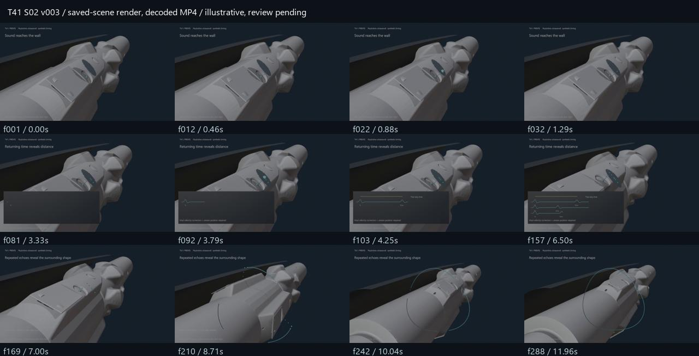

T41 / MIT ECCO - PREVIS / experimental v003. 12 seconds, 640×360, 24 fps, silent. Gray blocking preview; not final look or approved production animation.
First contact 0–3s → returning time 3–7s → surrounding outline 7–12s. Signals, waveform, timing and wall samples are synthetic illustrations. CGI cutaway suppresses rock/mud; the final ring uses an x-ray data overlay. Acoustic-face location and actual deployment orientation remain unverified.
Review after watching: What returns to ECCO? What does the timing reveal? Why do repeated readings matter? Human comprehension and MIT technical review remain pending.
